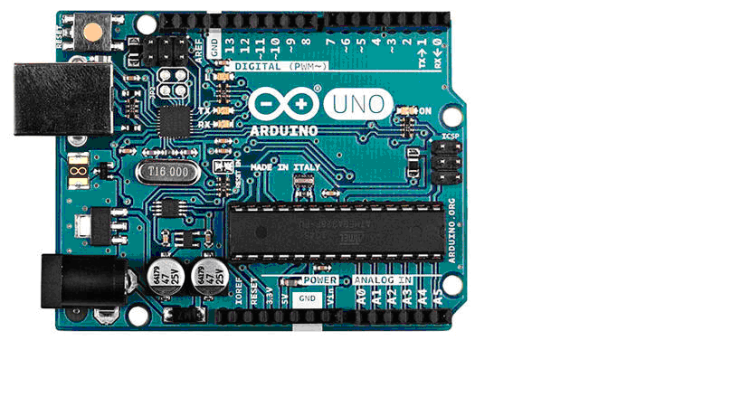
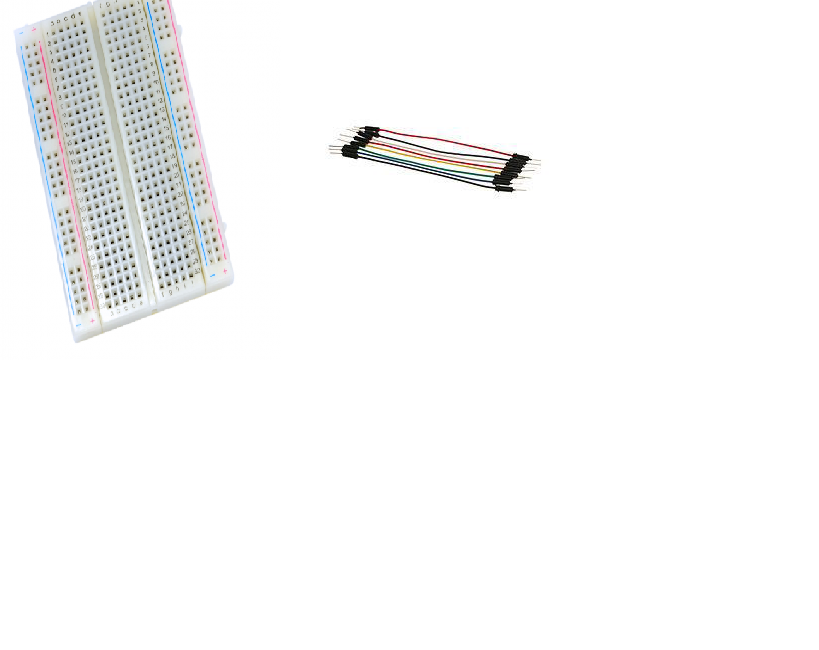
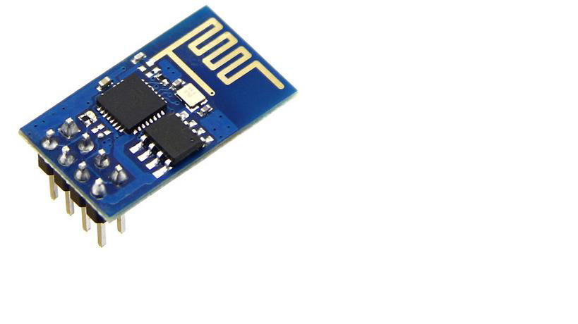

ARDUINO UNO BOARD
 Arduino is an open source, PC paraphernalia and programming organization, endeavour, and client group that plans and produce microcontroller packs for constructing programmed devices and intelligent object that can detect and control questions in the real world. The inception of the Arduino extend began at the Interaction Design Institute in Ivrea, Italy. The equipment reference plans are appropriated under a Creative Commons Attribution Share.
BREADBOARD & JUMPER WIRES
 A modern solderless breadboard consists of a perforated block of plastic with numerous tin plated phosphor bronze or nickel silver alloy spring clips under the perforations. The clips are often called tie points or contact points. The number of tie points is often given in the specification of the breadboard. The spacing between the clips (lead pitch) is typically 0.1 in (2.54 mm). Integrated circuits (ICs) in dual in-line packages (DIPs) can be inserted to straddle the centerline of the block. Interconnecting wires and the leads of discrete components (such as capacitors, resistors, and inductors) can be inserted into the remaining free holes to complete the circuit. Where ICs are not used, discrete components and connecting wires may use any of the holes.A breadboard is utilized to build and test circuits expeditiously afore finalizing any circuit design. The breadboard has many apertures into which route components like ICs and resistors can be connected. Jump wires are generally used to establish connectivity with bread board.
ULTRASONIC SENSOR
 The Ultrasonic Sensor is used to measure the distance with high accuracy and stable readings.
It can measure distance from 2cm to 400cm or from 1 inch to 13 feet. It emits an ultrasound
wave at the frequency of 40KHz in the air and if the object will come in its way then it will
bounce back to the sensor. By using that time which it takes to strike the object and comes
back, you can calculate the distance. Distance can be measured by equation 1.
Distance = Time * sound speed /2. (1)
Where Time = the time between an ultrasonic wave is received and transmitted. It has four
pins. Two are VCC and GND which will be connected to the 5V and the GND of the Arduino
while the other two pins are Trig and Echo pins which will be connected to any digital pins of
the Arduino. The trig pin will send the signal and the Echo pin will be used to receive the
signal. To generate an ultrasound signal, you will have to make the Trig pin high for about
10us which will send a 8 cycle sonic burst at the speed of sound and after striking the object,
it will be received by the Echo pin.
The Ultrasonic Sensor is used to measure the distance with high accuracy and stable readings.
It can measure distance from 2cm to 400cm or from 1 inch to 13 feet. It emits an ultrasound
wave at the frequency of 40KHz in the air and if the object will come in its way then it will
bounce back to the sensor. By using that time which it takes to strike the object and comes
back, you can calculate the distance. Distance can be measured by equation 1.
Distance = Time * sound speed /2. (1)
Where Time = the time between an ultrasonic wave is received and transmitted. It has four
pins. Two are VCC and GND which will be connected to the 5V and the GND of the Arduino
while the other two pins are Trig and Echo pins which will be connected to any digital pins of
the Arduino. The trig pin will send the signal and the Echo pin will be used to receive the
signal. To generate an ultrasound signal, you will have to make the Trig pin high for about
10us which will send a 8 cycle sonic burst at the speed of sound and after striking the object,
it will be received by the Echo pin.
ESP8266 WIFI MODULE
 ESP8266 is a Wi-Fi module which will give your projects access to Wi-Fi or internet. It is a very cheap device but it will make your projects very powerful. It can communicate with any microcontroller and make the projects wireless. It is in the list of most leading devices in the IOT platform. It runs on 3.3V and if you will give it 5V then it will get damaged. The ESP8266 has 8 pins; the VCC and CH-PD will be connected to the 3.3V to enable the wifi. The TX and RX pins will be responsible for the communication of ESP8266 with the Arduino. The RX pin works on 3.3V so you will have to make a voltage divider for it as it used for implementation.